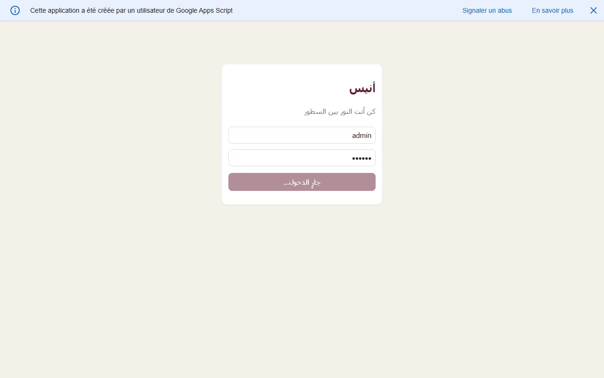
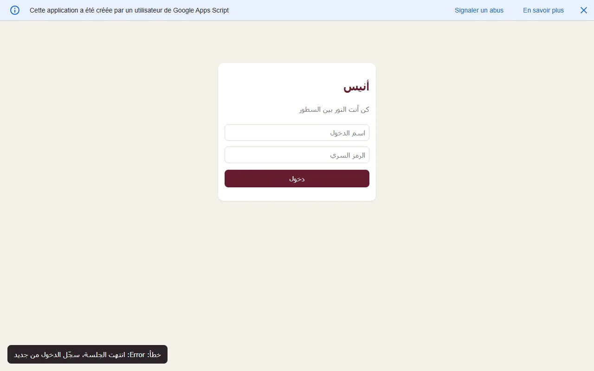
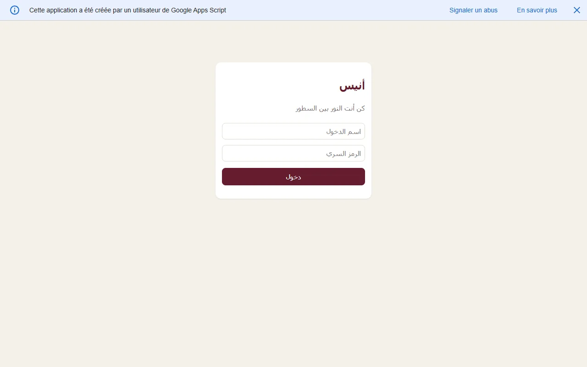
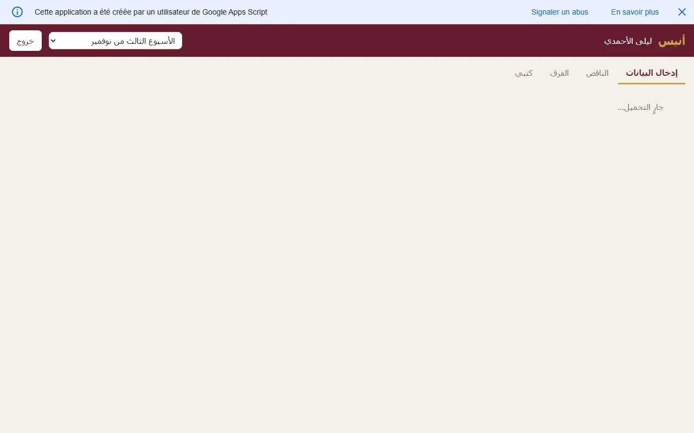
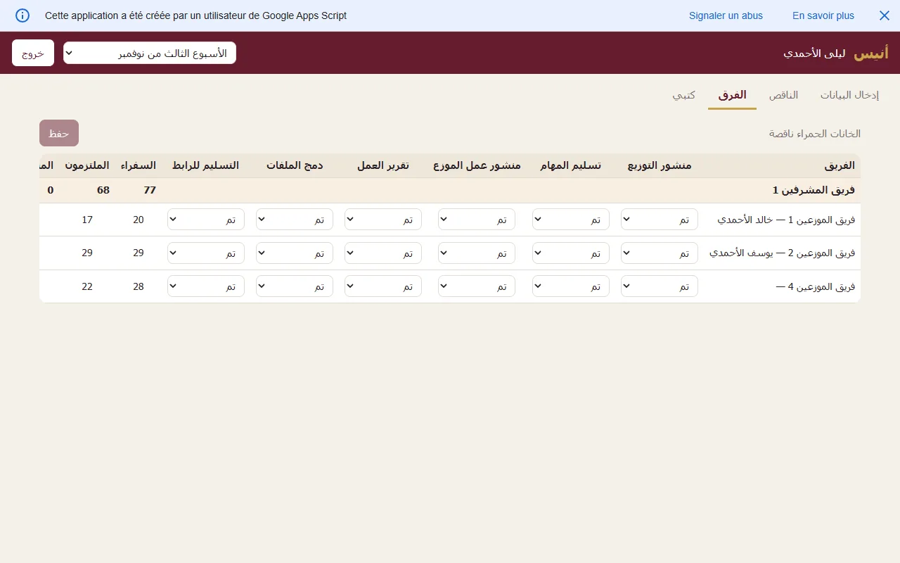
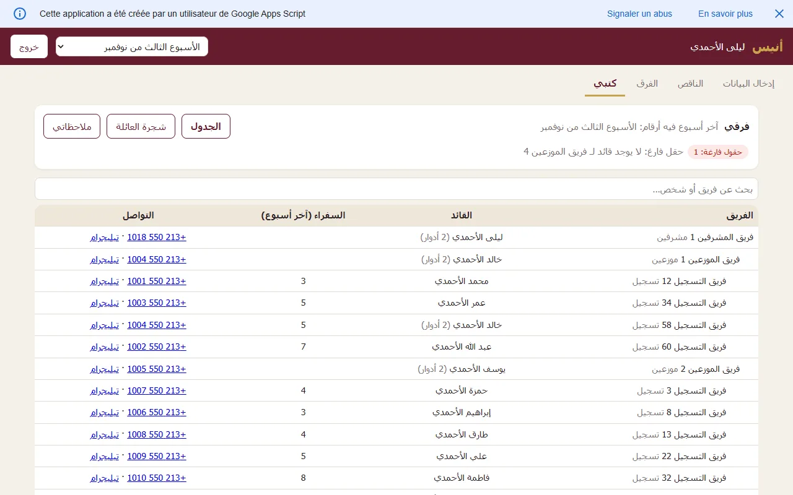
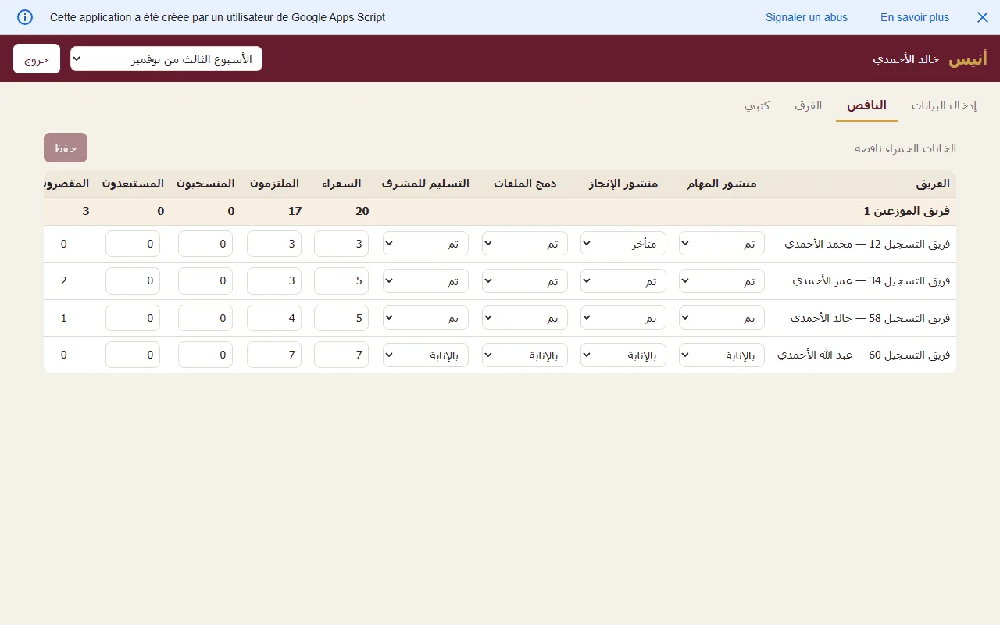
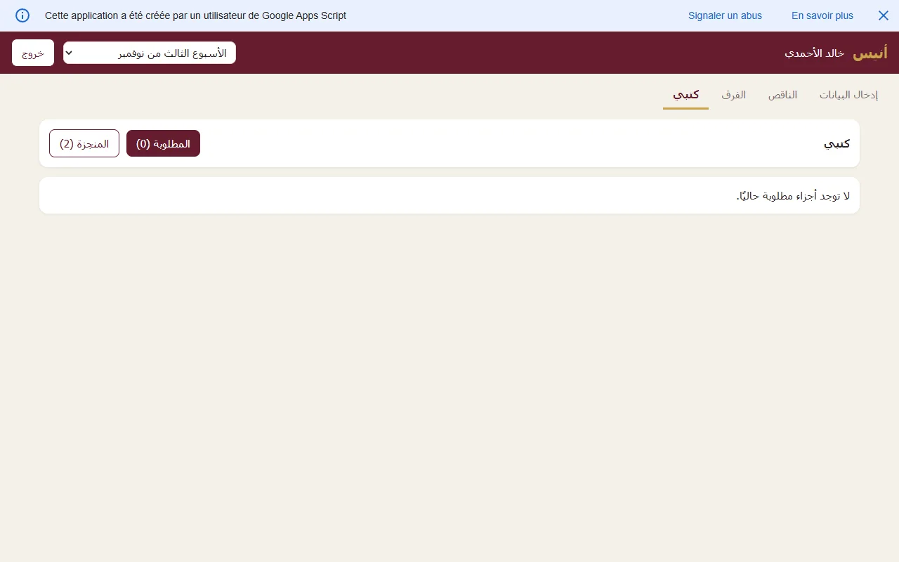

دليل استخدام تطبيق أنيس
كن أنت النور بين السطور — الدليل التفاعلي الشامل لجميع الأدوار والمهام.
1. البداية: ما هو تطبيق أنيس والهيكل التنظيمي
تطبيق «أنيس» هو نظام متكامل مبني على Google Apps Script ومقترن بقاعدة بيانات Google Sheets لإدارة مهام القراءة وتوزيع الكتب ومتابعة الإنجاز الأسبوعي لأسرة أنيس.
الهيكل الهرمي ومسؤوليات الأدوار:
- 🔹 مسؤول الرابطين (الأدمن): يقود المنظومة ويدير الرابطين وقاعدة البيانات والكتب والأسابيع.
- 🔹 الرابط: يقود فريق المشرفين (يضم نحو 3 مشرفين). يوجد 4 روابط رئيسيين، ويشرف كل رابط على فرعه بالكامل.
- 🔹 المشرف: يقود فريق الموزعين، ويتابع تعبئة بيانات سفراء فرق التوزيع.
- 🔹 الموزع: يقود فريق التسجيل المكون من سفراء القراءة. (الموزعون ليس لديهم حسابات دخول حالياً).
الفرق الخاصة:
الأفرقة الفضية (Silver Teams) وفريق غِراس أنيس (Ghiras) هي فرق نوعية تخضع لإشراف ومتابعة الأدمن مباشرة في توزيع الكتب واعتماد الإنجاز.
2. دليل مسؤول النظام (الأدمن - مسؤول الرابطين)
يمتلك الأدمن الصلاحية الإدارية الكاملة في التطبيق عبر تبويبات إدخال البيانات، الناقص، الأسابيع، اللوحة، الفرق، الكتب، وكتبي.
أدخل اسم الدخول في حقل «اسم الدخول» والرمز السري في حقل «الرمز السري»، ثم اضغط زر «دخول».

اختر الأسبوع المطلوب من القائمة المنسدلة في الترويسة، وتنقل بسلاسة بين التبويبات المتاحة.

بدّل بين «جدول الموزعين» و «جدول المشرفين». اكتب الأرقام في الخانات المطلوبة، واضغط زر «حفظ» لتثبيت البيانات.


استعرض الخانات والفرق الناقصة، وانسخ نص التذكير الجاهز من بطاقة التذكير لإرساله لقادة الفرق عبر تيليجرام.

أغلق الأسبوع المكتمل بعد خلوه من النواقص، أو حدد الأسبوع كـ «إجازة»، أو أعد فتح أسبوع مغلق استثنائياً.

تابع تقارير الأداء الأسبوعية والشهرية والسنوية وترتيب الفرق، وراجع حوض سد النقص واحتساب الفائض.


تحكم بشجرة الفرق 2D، عيّن أو انقل القادة، وافتح «عرض ثلاثي الأبعاد» لغابة أنيس الحية أو انسخ رابط العرض التفاعلي.


3. دليل مسؤول الكتب
يختص مسؤول الكتب (والأدمن) بإدارة مكتبة أنيس الرقمية، رفع ملفات PDF، وتقسيمها وتوزيعها آلياً.
اضغط زر «+ كتاب جديد»، حدد العنوان وعدد الصفحات ونطاق الصفحات واسم «الرابط المسؤول» (كنص حر)، وارفع ملف الـ PDF.

اضغط زر «تقسيم» في بطاقة الكتاب. يبدأ النظام عبر مشغل خلفي بقص الـ PDF لأجزاء من 10 صفحات ويولد روابط مستقلة.

اضغط زر «توزيع الأجزاء»، استعرض التوزيع الآلي العادل للأجزاء على فرق الموزعين النشطة، ثم اضغط «اعتماد التوزيع».

4. دليل الرابط (قائد فريق المشرفين)
الرابط مسؤول عن متابعة فرعه الإشرافي والتأكد من سير عمل المشرفين وفرق التوزيع التابعة له.
أدخل إلى تبويب «إدخال البيانات» واملأ حقول تقرير عمل المشرفين ومؤشرات الفرع التابع لك.

في تبويب «الفرق»، يرى الرابط شجرة تنظيمية مقتصرة على المشرفين والموزعين التابعين لفرعه فقط.

استعرض أجزاء الكتب الموزعة على فرق فرعك. يمكنك الضغط على زر «تم» نيابة عن أي فريق، ويُقيد ذلك تلقائياً في سجل الرقابة.

5. دليل المشرف (قائد فريق الموزعين)
يقود المشرف فرق التوزيع ويضمن دقة البيانات الأسبوعية ومتابعة تقصير السفراء.
أدخل أعداد السفراء والملتزمين والصفحات الإضافية والمنسحبين لكل فريق تسجيل تابع لك واضغط «حفظ».
استخدم تبويب «الناقص» لحصر الخانات غير المكتملة وتذكير قادة الفرق باستكمالها فوراً.

6. دليل قائد فريق الموزعين (تبويب كتبي)
يستخدم قائد فريق الموزعين تبويب «كتبي» لاستلام أجزاء القراءة المخصصة لفريقه وتأكيد إنجازها.
افتح تبويب «كتبي»، واطلع على اسم الكتاب ورقم الجزء ورابط تحميل ملف الـ PDF المخصص لفريقك.

بعد انتهاء قراءة الجزء، اضغط زر «تم» ليتم تسجيل إنجاز الفريق فوراً ويظهر تاريخ الحذف التلقائي.
7. الأسئلة الشائعة (FAQ)
8. استكشاف الأخطاء وحلولها (Troubleshooting)
الرمز السري مقفل أو منسي
تواصل مع مسؤول الرابطين (الأدمن) لإعادة تعيين الرمز السري من جدول المستخدمين وتوليد رمز مؤقت.
الأسبوع مغلق ولا يقبل التعديل
الأسبوع المغلق يكون للقراءة فقط. في الحالات الضرورية، يمكن للأدمن وحده استخدام زر «إعادة فتح» ثم إغلاقه مجدداً.
تعذر الحفظ في جدول البيانات
تأكد من إدخال أرقام صحيحة وخلو الحقول من الأحرف غير الصالحة، وتحقق من اتصالك بالإنترنت وتفعيل زر «حفظ (N)».
تعذر تقسيم الكتاب أو بقاء الأجزاء بحالة معلقة
التقسيم يتم عبر مشغل خلفي يعمل بعد نحو 60 ثانية لحماية الأداء. انتظر دقيقة إلى دقيقتين ثم حدّث الصفحة لتجد الأجزاء مكتملة.